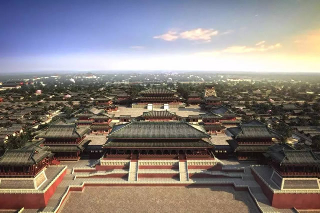
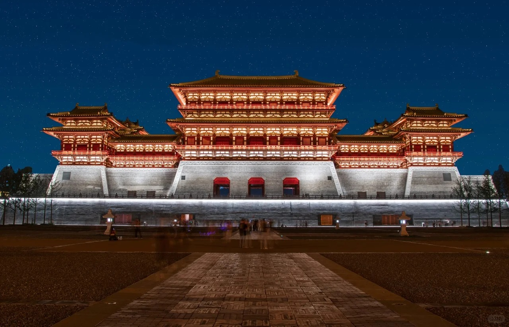

历史背景
隋朝虽国祚短暂，但在建筑领域进行了前所未有的、规模浩大的国家工程建设，以高度的标准化、组织力与雄心，奠定了大一统帝国的基础设施框架，对后世产生了制度性、技术性的深远影响。
- 都城规划革新：兴建大兴城（长安前身）和洛阳城，开创了中国古代都城规划的新范式
- 佛教建筑兴盛：大兴佛教，修建了大量佛寺、佛塔，推动佛教建筑艺术发展
- 水利工程完善：开凿大运河，修建水利工程，促进南北经济文化交流
隋朝建筑工程数据可视化
隋朝·建筑类型统计
注：数据基于历史文献记载与考古发现统计，反映隋朝建筑活动的相对规模。宗教/祭祀建筑的建设规模远超其他类型。
隋朝·建筑材质分析
注：基于隋朝建筑遗存与文献记载分析，木材是主要结构材料，石材在桥梁与雕刻中有精湛应用。
隋朝代表性建筑成就
点击任意卡片查看详细信息

大兴城皇宫
隋文帝所建大兴宫（唐代改称太极宫），是隋唐长安城的核心与起点，标志着中国古代都城规划在历经南北朝多元探索后，于隋代重归严谨中正、规模空前的礼制典范。

洛阳紫微城
隋唐两代的东都宫城，以其极致的轴线格局、壮丽的建筑组群与巧妙的水系利用，将中国古代宫殿的象征性与实用性推向新的高度。
隋代关中民居
隋朝统一初期的基层居住形态，在继承北朝传统基础上呈现等级分化，乡村以半地穴式简朴住宅为主，城中则出现规整合院雏形，为唐代民居发展奠定基础。
赵州桥（安济桥）
世界现存最早、保存最完善的古代敞肩石拱桥，由工匠李春设计建造，体现了隋代高超的桥梁工程技术。